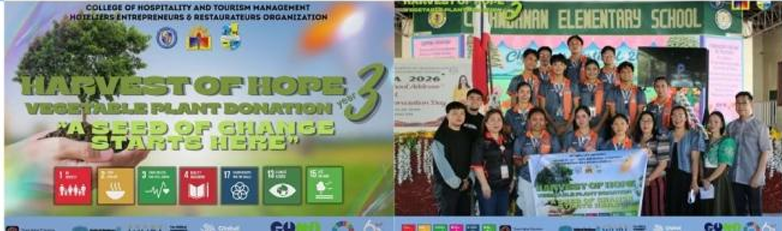
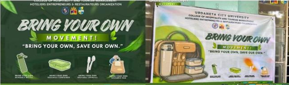

|
 |
 |
Urdaneta City University demonstrates a strong and sustained commitment to sustainability through the active engagement of student organizations at both faculty and university levels. These student-led initiatives play a vital role in advancing the university’s mission of fostering environmental stewardship, social responsibility, and community development, and are strongly supported by academic units and student affairs offices.
Over the past academic year, student organizations have implemented a wide range of sustainability-focused activities, including seminars, webinars, capacity-building training, environmental advocacy campaigns, community outreach programs, and innovative student-led initiatives that promote sustainable lifestyles and responsible citizenship. These activities are integrated into both campus life and community engagement efforts, reflecting a growing culture of sustainability among students.
Based on consolidated records from the Office of Student Affairs and Services and recognized student organizations, the university records an average of 150 sustainability-related activities per year organized by student groups. This substantial number highlights the dynamic and proactive participation of students in driving sustainability efforts across the institution.
Overall, this sustained level of engagement demonstrates that sustainability is not only an institutional priority but also a deeply embedded value among students, contributing significantly to the university’s efforts in building a more environmentally conscious, socially responsible, and future-ready academic community.